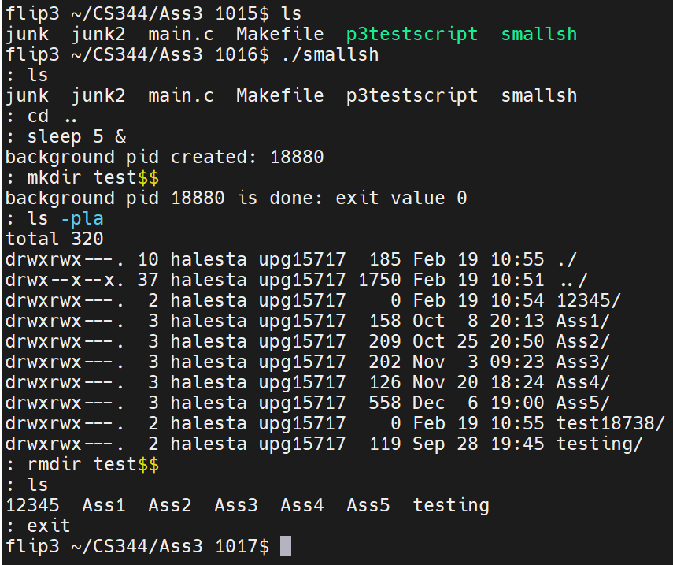

My Second Operating systems class challenged all my skills up to this point and was frustrating at times, but also found it very interesting. The class has helped me further undertand how computers function and reinforce my skills in computer science. Throughout the class we studied operating systems concepts and built up our own operating system to display that we have an actual grasp of the concepts and how they acatually work. Key subjects that I learned about and implemented in JOS were:
- Bootloader
- Paging
- Virtual Memory
- Scheduling
- Software/Hardware Interrupts
- Concurrency
- Copy-on-write Memory
- Preemptive Multitasking
The repo is currently private, but it can be viewed upon request.
My Operating systems class was challenging and fun. I felt like I was able to expand my skills in C in a meaningful way. Not only that but I gained more insight and knowledge on how computers, operating systems, and programs are managed and interact with each other. I found this to be valuable knowledge when writing programs for platforms and how they could differ. As a part of my Operating Systems class I built a functioning shell called smallsh. It can be executed from within an existing bash terminal. The shell can parse input from the user, execute built in bash commands via forking and executing processes, execute commands in the background and clean up finished proceses. The shell can also expand the $$ into the currently running process ID of the shell.
Here is an example command execution in the shell:
TraiList is a mobile application that works on both IOS and Android that procides a community-based experience to hiking. TraiList is the minimum viable product that was accepted by the client (which was our TA) for our Software Engineering class. Teams comprised of 7 students who met with their client weekly to deliver a minimum viable product. We had to plan team tasks through JIRA, conduct ressearch for the application, pitch designs, and validate our requirements with the client. We also documented implimentation the design throughout the process and created a Requirements Specification Document along with our video walkthrough of the application.
The areas of the application that I was tasked with designing and implimenting was that of the UI and functionality of the login and profile systems. The process included creating mockups, getting the designs accepted by the client, prototyping, researching, and testing that it meets expectations. This involved doing research into applications in similar markets and looking at the design processes used for developing UI. We had tested the UI simplicity and readability with several users to see which disigns were most intuitive based off of time and ease of use. Overall this was a fun and educational project that helped grow my skills in software engineering that I wish to expand!
Here is our user experience walkthrough of TraiList:
On my free time, I have been working on recreating Friendventure Web in Unity. Friendventure Unity will not only be a remake, but we are working on another version of the game where platformer gameplay will be the focus but with visual novel story telling segments. Both are in early stages of development, but my focus is currently on the UI and development of a fully visual novel remake of Friendventure first. I am planning on releasing a demo of the game with temporary art assets at a later date and hopefully soon after the full game for free on itch.io and steam!
For now here is an early look at the UI and some systems I have been developing:
As a part of my Web Development class my team and I built a little visual novel adventure game called Friendventure. Only having a couple of weeks to put this together and create all the art was stressful, but also tons of fun. Because of the time constraint and limitations of html, we had to scale down and bring back the scope of the project so that we could get everything done on time. It was good for getting experience with java script and showing what we have learned during the class with html and css. It was also out first times working on a project as a team which had its own complications. Learning skills such as how to assign tasks and a timeline throughout the development process were a valuable for my software engineering class in the future.
Here is a quick look at some of the art and locations that you can exlpore in Friendventure!
On my free time since winter break of 2022, I have been learning Java and studying how Minecraft works to develope my mod, Spotions. The theme of the mod is potion brewing and alchemy. It is very much in early development, but I have been able to create my own ores and generate them in the world. I have also made my own custom models and textures for new items such as the Byrill-Enforced Diamond tool set and the brewing cauldron!
Here is a little sneak peek at what I have been working on for this mod!